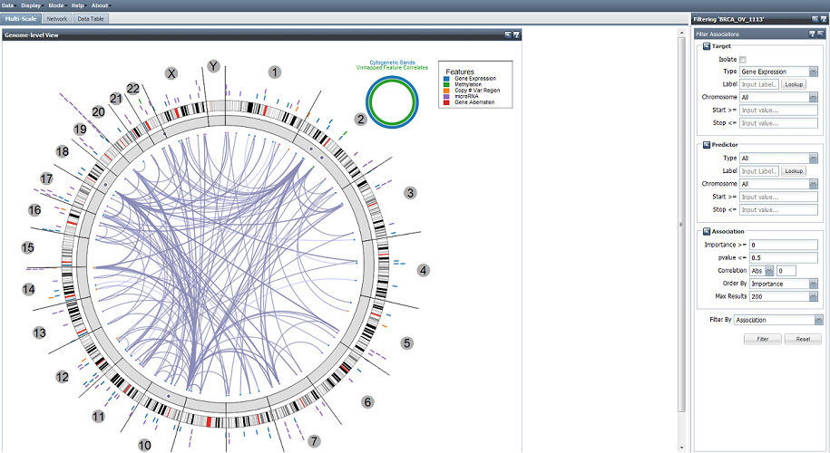

New paper published in Cancer Cell on "Integrated Analyses Identify a Master MicroRNA Regulatory Network for the Mesenchymal Subtype in Serous Ovarian Cancer" as part of the The Cancer Genome Atlas(TCGA) project.
The cover of Cancer Cell features the article, with a graphic depicting the analysis.
TCGA Center for Systems Analysis of the Cancer Regulome
The Cancer Genome Atlas (TCGA) provides an unprecedented opportunity to take an integrated approach toward a systems level understanding of regulatory disruptions in cancer. Such disruptions and their consequences are intertwined within complex dynamical networks through a multitude of interactions among different types of biomolecules. Understanding such relationships requires multivariate analysis methods that can be effective in the context of highly heterogeneous data, measurement uncertainty, and missing data.

The cover of Cancer Cell features the paper: Integrated Analyses Identify a Master MicroRNA Regulatory Network for the Mesenchymal Subtype in Serous Ovarian Cancer

Regulome Explorer: Explore, mine, and visualize complex datasets

Pubcrawl: Dynamic network topologies created from literature distances

CRC Aggressiveness: Explore features related to colorectal cancer aggressiveness

GeneSpot: Explore TCGA data from a Gene-centric point-of-view
Research
Development of novel computational approaches for analyzing large-scale heterogeneous data.
Cancer Studies
Actively participating and contributing to several TCGA tumor Analysis Working Groups.
Software
Web-based interactive visualization and exploratory tools, and computational infrastructure that promotes collaborative research.
News & Events
February 2013
November 2012
The Center for Systems Analysis of the Cancer Regulome attended the 2nd Annual TCGA Scientific Symposium. The symposium was co-chaired by Ilya Shmulevich.
Brady Bernard and Hector Rovira gave a talk, introducing Genespot: A Portal for Interactive Gene-Centric Exploration of The Cancer Genome Atlas.
Dick Kreisberg presented a workshop on the Regulome Explorer.
Brady Bernard and Hector Rovira gave a talk, introducing Genespot: A Portal for Interactive Gene-Centric Exploration of The Cancer Genome Atlas.
Dick Kreisberg presented a workshop on the Regulome Explorer.
October 2012
New paper published in Nature on comprehensive molecular portraits of human breast tumors as a part of The Cancer Genome Atlas(TCGA) project.
An article related to the work was published in the New York Times.
An article related to the work was published in the New York Times.
September 2012
A recent article on the Shmulevich Group's efforts to analyze genomic information using large computational clusters with cloud infrastructure on demand.
July 2012
New paper published in Nature on Colorectal cancer characterization as a part of The Cancer Genome Atlas(TCGA) project.
An article related to the work was featured on the home page of the New York Times.
An article related to the work was featured on the home page of the New York Times.
June 2012
Our work was featured during a keynote presentation at the Google I/O 2012 conference.
The keynote, delivered by Urs Hölzle, Senior Vice President of Infrastructure at Google, introduced Google Compute Engine. He demonstrated how RF-ACE, a machine learning algorithm that learns associations among genomic and clinical features, can be scaled to 600,000 cores across Google’s global data centers and the results visualized using a version of Regulome Explorer.
A case study written by Google can be found here.
The keynote, delivered by Urs Hölzle, Senior Vice President of Infrastructure at Google, introduced Google Compute Engine. He demonstrated how RF-ACE, a machine learning algorithm that learns associations among genomic and clinical features, can be scaled to 600,000 cores across Google’s global data centers and the results visualized using a version of Regulome Explorer.
A case study written by Google can be found here.
May 2012
Regulome Explorer is featured in
this article
where ISB founder Dr. Leroy Hood talks about
the application of mathematics to biological research.

March 2012
Regulome Explorer is covered in
this story
about online tools available for analyzing TCGA data.

December 2011
Addama described in this
technology feature
on adaptive technologies for systems biology data integration.